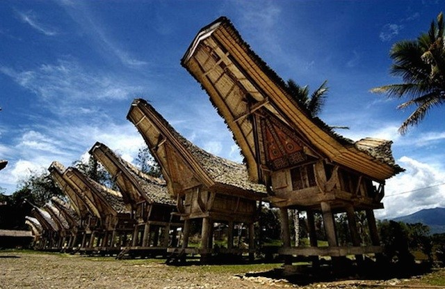

Tempat Bersejarah di Indonesia
Indonesia dikenal negara yang memiliki sejuta kebudayaan. Kebudayaan yang ada di Indonesia semata-mata merupakan nilai warisan dari nenek moyang. Kebudayaan yang tercipta hingga sekarang ini memiliki peninggalan yang bersejarah dari zaman dahulu di mana kita dapat menikmati peninggalan tersebut hingga saat ini. Peninggalan-peninggalan tersebut merupakan bukti akan saksi mati kehidupan sejarah Indonesia. Selain berbentuk prasasti, peninggalan sejarah zaman dahulu kala juga dibuktikan dengan adanya tempat wisata bersejarah di Indonesia yang sampai sekarang masih dapat kita lihat. Tempat wisata bersejarah di Indonesia seakan membuat kita kembali mengingat lagi bagaimana keadaan Indonesia dulunya. Dengan cerita-cerita kerajaan yang menjadi awal adanya Indonesia. Sekarang tempat-tempat bersejarah itu dapat kita lihat sampai sekarang. Dan sekarang tempat itu dijadikan tempat tujuan wisata bersejarah di Indonesia. Tempat wisata apa saja itu akan diulas sedikit di bawah ini.
1. candi Borobudur, Jawa Tengah

Candi Borobudur merupakan sebuah candi Buddha yang terletak di Magelang, Jawa Tengah. Lokasi candi kurang lebih 86 km di sebelah barat Surakarta, 100 km di sebelah barat daya Semarang dan 40 km di sebelah barat laut Yogyakarta. Candi berbentuk stupa ini didirikan oleh para penganut agama Buddha Mahayana sekitar tahun 800an Masehi pada masa pemerintahan wangsa Syailendra. Borobudur juga merupakan candi atau kuil Buddha serta monumen Buddha terbesar di dunia. Borobudur diperkirakan dibangun sekitar tahun 800 masehi. Kurun waktu ini sesuai dengan kurun antara 760 dan 830 M, yang merupakan masa puncak kejayaan wangsa Syailendra di Jawa Tengah. Hal yang unik dari candi borobudur adalah balok yang digunakan sebagai bahan utama konstruksi bangunan terbuat dari abu vulkanik Gunung Merapi yang dibekukan. Balok-balok ini kemudian disusun membentuk lebih dari 500 buah arca tanpa menggunakan semen sama sekali. Luar biasa bukan, Tak hanya itu, candi ini juga penuh dengan pahatan relief yang menceritakan perjalanan hidup Sang Buddha.
2. Candi Prambanan, Yogyakarta

Candi Loro Jonggrang atau Candi Prambanan merupakan kompleks candi Hindu terbesar di Indonesia yang dibangun pada abad ke-9 masehi. Candi ini dipersembahkan untuk Trimurti, tiga dewa utama Hindu yaitu Wishnu, Siwa dan Brahma. Prambanan merupakan candi Hindu terbesar dan termegah yang pernah dibangun di Jawa kuno, pembangunan candi Hindu kerajaan ini diawali oleh Rakai Pikatan sebagai tandingan candi Buddha Borobudur dan juga candi Sewu yang terletak tak jauh dari Prambanan. Beberapa sejarawan lama menduga bahwa pembangunan candi agung Hindu ini untuk menandai kembali berkuasanya keluarga Sanjaya atas Jawa, hal ini terkait teori wangsa kembar berbeda keyakinan yang saling bersaing. yaitu wangsa Sailendra penganut Buddha dan wangsa Sanjaya penganut Hindu. Candi Prambanan sendiri pertama kali dibangun sekitar tahun 850 Masehi oleh Rakai Pikatan dan secara berkelanjutan disempurnakan dan diperluas oleh Raja Lokapala dan raja Balitung Maha Sambu. Berdasarkan prasasti Siwagrha berangka tahun 856 M, Dalam prasasti Siwagrha tertulis bahwa saat pembangunan candi Siwagrha berlangsung, dilakukan juga pekerjaan umum perubahan tata air untuk memindahkan aliran sungai di dekat candi ini. Sungai yang dimaksud adalah sungai Opak yang mengalir dari utara ke selatan sepanjang sisi barat kompleks candi Prambanan. Candi Prambanan juga memiliki cerita rakyat yang melekat erat dengannya yaitu cerita Roro Jonggrang. Dikisahkan bahwa candi induk yang ada merupakan wujud Roro Jonggrang yang dikutuk oleh Bandung Bondowoso karena berusaha menggagalkan upaya Bondowoso membangun seribu candi untuknya.
3. Lawang Sewu, Semarang

Lawang Sewu merupakan gedung gedung bersejarah di Indonesia yang berlokasi di Kota Semarang, Jawa Tengah. Gedung ini, dahulu yang merupakan kantor dari Nederlands-Indische Spoorweg Maatschappij atau NIS. Dibangun pada tahun 1904 dan selesai pada tahun 1907. Terletak di bundaran Tugu Muda. Lawang Sewu dibangun pada 27 Februari 1904 dengan nama Het hoofdkantor van de Nederlands-Indische Spoorweg Maatschappij (yang digunakan untuk Kantor Pusat NIS). pada mulanya kegiatan administrasi perkantoran dilakukan di Stasiun Semarang Gudang (Samarang NIS), namun dengan berkembangnya jalur jaringan kereta yang begitu pesat, mengakibatkan bertambahnya kebutuhan personil teknis dan tenaga administrasi yang besar.
4. Istana Maimun, Medan

Istana Maimun bisa disebut juga Istana Putri Hijau, merupakan istana kebesaran Kerajaan Deli. Istana ini didominasi warna kuning yang merupakan warna kebesaran kerajaan Melayu, istana Maimun merupakan salah satu ikon kota Medan, Sumatera Utara. Didesain oleh arsitek Italia dan dibangun oleh Sultan Deli, Sultan Mahmud Al Rasyid. Pembangunan istana ini dimulai dari 26 Agustus 1888 dan selesai pada 18 Mei 1891. Istana Maimun memiliki luas sebesar 2.772 m2 dan 30 ruangan. Istana Maimun terdiri dari 2 lantai dan memiliki 3 bagian yaitu bangunan induk, bangunan sayap kiri dan bangunan sayap kanan. Bangunan istana ini menghadap ke utara dan pada sisi depan terdapat bangunan Masjid Al-Mashun atau yang lebih dikenal dengan sebutan Masjid Raya Medan. Di istana ini juga terdapat meriam buntung yang memiliki legenda tersendiri. Orang Medan menyebut meriam ini dengan sebutan Meriam Puntung. Kisah meriam puntung ini memiliki kaitan dengan Putri Hijau. Diceritakan, di Kerajaan Timur Raya, hiduplah seorang putri yang cantik jelita, bernama Putri Hijau. Ia disebut demikian, karena tubuhnya memancarkan warna hijau. sang putri mempunyai dua orang saudara laki-laki, yaitu Mambang Khayali dan Mambang Yasid. Istana Maimun menjadi tujuan wisata bukan hanya karena usianya yang tua, namun juga desain interiornya yang unik, memadukan unsur-unsur warisan kebudayaan Melayu, dengan gaya Islam, Spanyol, India dan Italia. Namun sayang, tempat wisata ini tidak bebas dari kawasan Pedagang kaki lima.
5. Asta Tinggi, Madura

Asta Tinggi adalah kawasan pemakaman khusus para Pembesar/Raja/Kerabat Raja yang teletak di kawasan dataran tinggi bukit Kebon Agung Sumenep. Dalam Bahasa Madura, Asta Tinggi disebut juga sebagai Asta Raja yang bermakna makam para Pangradja (pembesar kerajaan) yang merupakan asta/makam para raja, anak keturunan beserta kerabat-kerabatnya yang dibangun sekitar tahun 1750M. Kawasan Pemakaman ini direncanakan awalnya oleh Panembahan Somala dan dilanjutkan pelaksanaanya oleh Sultan Abdurrahman Pakunataningrat I dan Panembahan Natakusuma II. Asta tinggi sendiri menurut arti Etimologi adalah makam yang tinggi. Itu berdasar dari letak makam yang berada di puncak bukit dan penamaan Asta Tinggi sebenarnya hanya untuk mempermudah penyebutan saja. Di Asta Tinggi sendiri bukan hanya terdapat makam dari raja namun juga makam dari keluarga raja, sentana, dan punggawa sejak abad XVI. Dari banyak sumber sejarah mengatakan bahwa Asta Tinggi memiliki nilai kekeramatan yang tinggi. Meskipun dulu mempunyai mitos keangkeran dan daya mistis yang tinggi sekarang hal tersebut seperti sudah lenyap karena sudah banyak orang yang berziarah. Orang banyak berziarah kesini karena raja-raja sumenep juga dikenal karena kewaliannya karena perduli terhadap perkembangan Islam di daerah Sumenep dan sekitarnya.
6. Masjid Agung Palembang, Palembang

Sejarah Masjid Agung Palembang diawali Saat terjadi perang antara masyarakat Palembang dengan Belanda di tahun 1659 M, kala itu sebuah masjid terbakar. Masjid tersebut merupakan masjid yang dibangun oleh Sultan Palembang kala itu, Ki Gede Ing Suro, yang berlokasi di Keraton Kuto Gawang. Beberapa tahun kemudian, tepatnya di tahun 1738 M, Sultan Mahmud Badaruddin Jayo Wikramo membangun kembali masjid tepat di lokasi berdirinya masjid yang terbakar. Pembangunan masjid yang baru memakan waktu cukup lama, hingga pada 26 Mei 1748 atau pada 28 Jumadil Awal 1151 tahun hijriah, masjid tersebut baru diresmikan berdiri. Di awal pembangunannya, Masjid Agung Palembang disebut oleh masyarakat Palembang dengan nama Masjid Sulton. Nama tersebut merujuk pada pembangunan masjid yang diketuai dan dikelola secara langsung oleh Sultan Mahmud Badaruddin Jaya Wikramo. Sekarang Masjid Agung Sultan Mahmud Badaruddin I atau biasa disebut Masjid Agung Palembang adalah sebuah masjid paling besar di Kota Palembang, Sumatera Selatan. Masjid ini dipengaruhi oleh 3 arsitektur yakni Indonesia, China dan Eropa.
7. Masjid Agung Demak, Jawa Tengah

Masjid Agung Demak merupakan salah satu mesjid tertua yang ada di Indonesia. Masjid ini terletak di Kampung Kauman, Kabupaten Demak, Jawa Tengah. Masjid Agung Demak dipercayai pernah menjadi tempat berkumpulnya walisongo (para ulama yang menyebarkan agama Islam di tanah Jawa). Pendiri masjid ini diperkirakan adalah Raden Patah, yaitu raja pertama dari Kesultanan Demak sekitar abad ke-15 Masehi. Raden Patah bersama Wali Songo mendirikan masjid yang karismatik ini dengan memberi gambar serupa bulus. Ini merupakan candra sengkala memet, dengan arti Sarira Sunyi Kiblating Gusti yang bermakna tahun 1401 Saka. Gambar bulus terdiri atas kepala yang berarti angka 1 (satu), 4 kaki berarti angka 4 (empat), badan bulus berarti angka 0 (nol), ekor bulus berarti angka 1 (satu). Dari simbol ini diperkirakan Masjid Agung Demak berdiri pada tahun 1401 Saka. Masjid ini didirikan pada tanggal 1 Shofar. Atap Masjid Agung Demak ditahan empat tiang kayu raksasa yang khusus dibuat empat wali di antara Wali Songo. Saka sebelah tenggara adalah buatan Sunan Ampel, sebelah barat daya buatan Sunan Gunung Jati, sebelah barat laut buatan Sunan Bonang, sedang sebelah timur laut merupakan sumbangan Sunan Kalijaga.
8. Masjid Menara Kudus, Jawa Tengah

Masjid Menara Kudus disebut juga dengan Masjid Al Manar ("Mesjid Menara") adalah masjid kuna yang dibangun oleh Sunan Kudus sejak tahun 1549 Masehi (956 Hijriah). Lokasi saat ini berada di Desa Kauman, Kabupaten Kudus, Jawa Tengah. Ada keunikan dari masjid ini karena memiliki menara yang serupa bangunan candi serta pola arsitektur yang memadukan konsep budaya Islam dengan budaya Hindu-Buddhis sehingga menunjukkan terjadinya proses akulturasi dalam pengislaman Jawa. Berdirinya Masjid Menara Kudus tidak terlepas dari peran Sunan Kudus sebagai penggagas dan pendiri. Sebagaimana Walisongo yang lainnya, Sunan Kudus menggunakan pendekatan kultural (budaya) dalam berdakwah. Masjid ini mulai didirikan pada tahun 956 H atau 1549 M. Hal ini didasarkan pada inskripsi berbahasa Arab yang tertulis pada prasasti batu berukuran lebar 30 cm dan panjang 46 cm yang terletak pada mihrab masjid. Peletakan batu pertama menggunakan batu dari Baitul Maqdis di Palestina, oleh karena itu masjid ini kemudian dinamakan Masjid Al Aqsha.
9. Masjid Raya Baiturrahman, Aceh

Masjid Raya Baiturrahman merupakan sebuah masjid Kesultanan Aceh yang dibangun oleh Sultan Iskandar Muda Mahkota Alam pada tahun 1022 H/1612 M. Pada masa Kesultanan Aceh Darussalam, Selain Masjidil Haram di kota suci Makkah, Masjid Raya Baiturrahman ini juga menjadi salah satu pusat pembelajaran agama Islam yang dikunjungi oleh orang-orang yang ingin mempelajari Islam dari seluruh penjuru dunia. Pada tanggal 26 Maret 1873 Kerajaan Belanda mendeklarasikan perang kepada Kesultanan Aceh, mereka mulai melepaskan meriam ke daratan Aceh dari kapal perang Citadel Van Antwerpen. Pada 5 April 1873, Belanda mendarat di Pante Ceureumen di bawah pimpinan Johan Harmen Rudolf Kohler, dan langsung bisa menguasai Masjid Raya Baiturrahman. Saat Kerajaan Belanda menyerang Kesultanan Aceh pada agresi tentara Belanda kedua pada Bulan Shafar 1290 Hijriah atau 10 April 1873 Masehi, Masjid Raya Baiturrahman dibakar. Kemudian, pada tahun 1877 Belanda membangun kembali Masjid Raya Baiturrahman untuk menarik perhatian serta meredam kemarahan Bangsa Aceh. Pada saat itu Kesultanan Aceh masih berada di bawah pemerintahan Sultan Muhammad Daud Syah Johan Berdaulat yang merupakan Sultan Aceh yang terakhir.
10. Gereja Blenduk, Jawa Tengah

Gereja Blenduk adalah Gereja Kristen tertua di Jawa Tengah yang dibangun oleh masyarakat Belanda yang tinggal di kota itu pada 1753, dengan bentuk heksagonal (persegi delapan). Gereja Blenduk sesungguhnya bernama Gereja GPIB Immanuel, di Jl. Letjend. Suprapto 32. Kubahnya besar, dilapisi perunggu, dan di dalamnya terdapat sebuah orgel Barok. Arsitektur di dalamnya dibuat berdasarkan salib Yunani. Gereja ini direnovasi pada 1894 oleh W. Westmaas dan H.P.A. de Wilde, yang menambahkan kedua menara di depan gedung gereja ini. Nama Blenduk adalah julukan dari masyarakat setempat yang berarti kubah. Gereja ini hingga sekarang masih dipergunakan setiap hari Minggu. Di sekitar gereja ini juga terdapat sejumlah bangunan lain dari masa kolonial Belanda. Gereja yang dibangun pada 1753 ini merupakan salah satu landmark di Kota Lama Semarang. Berbeda dari bangunan lain di Kota Lama yang pada umumnya memagari jalan dan tidak menonjolkan bentuk, gedung yang bergaya Neo-Klasik ini justru tampil kontras dan mudah dikenali.
11. Gereja Katredal, Jakarta

Gereja Katedral merupakan salah satu bangunan cagar budaya yang ada di Jakarta. Sebelum diresmikan sebagai bangunan cagar budaya, Gereja Katedral mempunyai sejarah yang panjang dalam pembangunannya. Pembangunan Gereja Katedral dimulai ketika Paus Pius VII mengangkat pastor Nelissen sebagi prefek apostik Hindia Belanda pada 1807. Saat itulah dimulai penyebaran misi dan pembangunan gereja katolik di kawasan nusantara, termasuk di Jakarta. Gereja yang sekarang ini dirancang dan dimulai oleh Pastor Antonius Dijkmans dan peletakan batu pertamanya dilakukan oleh Pro-vikaris, Carolus Wenneker. Pekerjaan ini kemudian dilanjutkan oleh Cuypers-Hulswit ketika Dijkmans tidak bisa melanjutkannya, dan kemudian diresmikan dan diberkati pada 21 April 1901 oleh Mgr. Edmundus Sybradus Luypen, S.J., Vikaris Apostolik Jakarta. Katedral yang kita kenal sekarang sesungguhnya bukanlah gedung gereja yang asli di tempat itu, karena Katedral yang asli diresmikan pada Februari 1810, namun pada 27 Juli 1826 gedung Gereja itu terbakar bersama 180 rumah penduduk di sekitarnya. Lalu pada tanggal 31 Mei 1890 dalam cuaca yang cerah, Gereja itu pun sempat roboh.
12. Masjid Istiqlal, Jakarta

Masjid Istiqlal, yang didirikan oleh Ir. Soekarno ini merupakan salah satu bangunan bersejarah peninggalan tahun 1978 yang menjadi rumah ibadah umat muslim dan telah lama menjadi salah satu bangunan terkenal di Jakarta. Kekokohannya yang berdiri di atas areal seluas 9,5 hektar ini mampu menampung kapasitas hingga 200.000 jamaah. masjid hasil karya arsitek Indonesia bernama F. Silaban tersebut juga pernah menjadi yang terbesar di benua Asia Tenggara sekaligus menjadi kebanggaan umat muslim Ibukota Tanah Air. Dibangun sekitar tahun 1951-an pada masa-masa awal kemerdekaan, masjid ini diyakini menyimpan lambang kemerdekaan, sesuai dengan nama bangunannya. Masjid Istiqlal memiliki kubah raksasa putih yang wujudnya mirip bola dibelah dua. Seperti masjid lainnya di dunia, masjid yang memiliki gaya arsitektur modern internasional ini dilengkapi dengan menara yang tingginya mencapai jumlah ayat yang terdapat pada kitab suci Al Qur’an. Sebuah bedug raksasa juga menjadi keunikan plus masjid ini dengan ukurannya yang besar, pernah dinobatkan sebagai bedug terbesar di Indonesia.
13. Gedung Sate, Bandung

Di Kota Bandung yang sejuk, kita bisa menemukan bangunan yang dibangun pada era kolonialisme Belanda, yaitu Gedung Sate. Gedung tersebut menjadi salah satu daya tarik para pengunjung Kota Kembang itu. Nama ‘Gedung Sate’ itu sendiri muncul di masyarakat Kota Bandung karena ornamen bangunannya terlihat seperti tusuk sate di puncak menara utamanya. Bangunan yang awalnya disebut Gouvernements Bedrijven pada masa Hindia Belanda ini dirancang oleh Ir.J.Gerber yang merupakan seorang arsitek ternama lulusan Fakultas Teknik Delf Nederland bersama timnya. Dan bangunan bergaya arsitektur zaman Renaissance Italia ini selesai didirikan pada tahun 1924. Dengan adanya monumen di bagian depan gedung dan juga benda-benda bersejarah dibagian menara, menjadikan tempat ini patut untuk jadi pilihan wisata sejarah.
14. Tongkonan, Sulawesi selatan<
Bangunan yang juga merupakan rumah adat ini memang bukan karya arsitek terkenal era modern yang menguasai berbagai macam teori dan gagasan. Tetapi, merupakan hasil cipta karya kreasi sekelompok masyarakat Tanah Toraja di Sulawesi Selatan. Tongkonan memiliki ciri khas yang unik yaitu berbahan panggun dari kayu, beratapan susunan bambu dengan lapisan ijuk hitam serta ada bagian berbentuk lengkungan seperti perahu telungkup. Selain itu dinding rumah yang berasal dari kayu, juga dihiasi dengan aneka ukiran khas Toraja. Kekhasan lain yang paling terlihat dari Tongkonan adalah kepala kerbau beserta tanduknya yang melingkar indah dan disusun pada sebuah gerbang utama di depan pintu rumah. Karenanya, Tongkonan menjadi salah satu daya tarik wisata Tator yang tak kalah asiknya dan banyak diminati para pengunjung.
15. Lobang Buaya, Jakarta

Lubang Buaya adalah sebuah tempat di kawasan Pondok Gede, Jakarta yang menjadi tempat pembuangan para korban Gerakan 30 September pada 30 September 1965. Secara spesifik, sumur Lubang Buaya terletak di Kelurahan Lubang Buaya di Kecamatan Cipayung, Jakarta Timur. Lubang Buaya pada terjadinya G30S saat itu merupakan pusat pelatihan milik Partai Komunis Indonesia. Saat ini di tempat tersebut berdiri Lapangan Peringatan Lubang Buaya yang berisi Monumen Pancasila, sebuah museum diorama, sumur tempat para korban dibuang, serta sebuah ruangan berisi relik. Nama Lubang Buaya sendiri berasal dari sebuah legenda yang menyatakan bahwa ada buaya-buaya putih di sungai yang terletak di dekat kawasan Pondok Gede. Selain itu juga terdapat rumah yang di dalamnya ketujuh pahlawan revolusi disiksa dan dibunuh. Terdapat mobil yang digunakan untuk mengangkut orang-orang.
16. Benteng Rotterdam, Makassar

Benteng Ujung Pandang (Jum Pandang) atau Fort Rotterdam merupakan sebuah benteng peninggalan Kerajaan Gowa-Tallo. Letak benteng ini berada di pinggir pantai sebelah barat Kota Makassar, Sulawesi Selatan, Benteng ini dibangun pada tahun 1545 oleh Raja Gowa ke-9 yang bernama I manrigau Daeng Bonto Karaeng Lakiung Tumapa'risi' kallonna. Pada mulanya benteng ini berbahan dasar tanah liat, namun pada masa pemerintahan Raja Gowa ke-14 Sultan Alauddin konstruksi benteng ini diganti menjadi batu padas yang bersumber dari Pegunungan Karst yang ada di daerah Maros. Biasanya masyarakat Gowa-Makassar menyebut benteng ini dengan sebutan Benteng Panyyua. Dalam sejarahnya Kerajaan Gowa-Tallo menandatangani perjanjian Bungayya yang salah satu pasalnya menuntut Kerajaan Gowa untuk menyerahkan benteng ini kepada Belanda. Pada saat Belanda menempati benteng ini, nama Benteng Ujung Pandang kamudian diganti menjadi Fort Rotterdam. Benteng ini kemudian digunakan oleh Belanda sebagai pusat penampungan rempah-rempah di Indonesia bagian timur. Saat ini, Benteng Rotterdam menjadi tempat wisata sejarah andalan kota Makassar. Di dalamnya terdapat museum La Galigo yang berisi koleksi benda-benda peninggalan Kerajaan Gowa-Tallo. Menariknya lagi, di sini terdapat sebuah ruangan yang dipercaya sebagai tempat pengasingan Pangeran Diponegoro di masa perjuangan dahulu.
17. taman Sari, Yogyakarta

Taman Sari adalah situs bekas taman atau kebun istana Keraton Ngayogyakarta Hadiningrat, Taman sari dibangun pada zaman Sultan Hamengku Buwono I pada tahun 1758-1765. Awalnya, taman yang mendapat sebutan "The Fragrant Garden" ini memiliki luas lebih dari 10 hektare dengan sekitar 57 bangunan baik berupa kolam pemandian, gedung, jembatan gantung, danau buatan, pulau buatan, kanal air serta lorong bawah air. Taman Sari yang digunakan secara efektif antara 1765-1812 ini pada mulanya membentang dari barat daya kompleks Kedhaton sampai tenggara kompleks Magangan. Namun sekarang sisa-sisa bagian Taman Sari yang dapat dilihat hanyalah yang berada di barat daya kompleks Kedhaton saja. Konon, Taman Sari dibangun di bekas keraton lama, Pesanggrahan Garjitawati, yang didirikan oleh Susuhunan Paku Buwono II sebagai tempat istirahat kereta kuda yang akan menuju Imogiri. Sebagai pimpinan proyek pembangunan Taman Sari dipilih Tumenggung Mangundipuro. Seluruh biaya pembangunan ditanggung oleh Tumenggung Prawirosentiko besrta seluruh rakyatnya. Di tengah pembangunan pimpinan proyek diambil alih oleh Pangeran Notokusumo, setelah Mangundipuro mengundurkan diri. Walaupun secara resmi sebagai kebun kerajaan, namun bebrapa bangunan yang ada mengindikasikan Taman Sari juga berperan sebagai benteng pertahanan terakhir jika istana diserang oleh musuh.